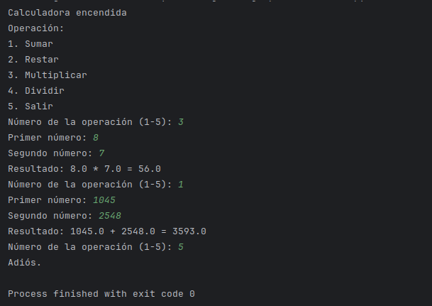
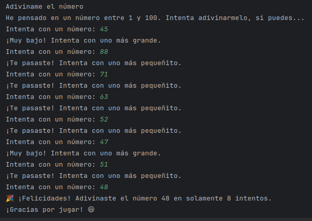

Te doy la bienvenida a mi portafolio personal. A continuación, les presento los mejores proyectos que he desarrollado con el fin de dar visibilidad a mis habilidades. También podeís acceder al apartado "información personal" donde encontraréis mi vida laboral y formación. Si mi perfil les ha llamado la atención, podeís poneros en contacto conmigo rellenando y enviando el formulario con la información correspondiente y no tardaré en ponerme en contacto por alguna via que se me haya facilitado. Muchas gracias por su visita.
Proyectos
Presentación a mi portafolio
La Calculadora Pequeñita
En el siguiente proyecto, desarrollo una pequeña calculadora capaz de realizar operaciones sencillas entre dos números.

El juego de la adivinanza numérica
En este proyecto, programo un juego en el que el objetivo es adivinar el número en el menor número de intentos posibles con prueba y error.
